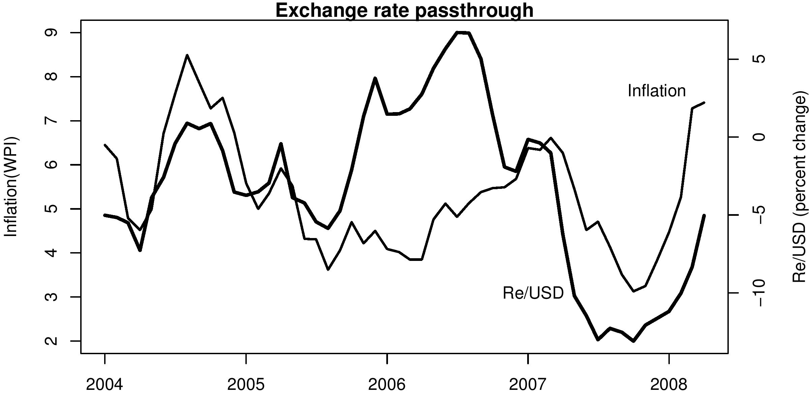

Engineering inflation
Indian Express, 31 May 2008
The last few days have seen a sharp depreciation of the rupee. At a time when inflation is already high and there are significant inflationary pressures in the economy, this is one shock the economy could have done without.
As the Indian economy has opened up it has become possible to import and export a large number of commodities. This has resulted in domestic prices being set by world prices. Even when a good is not being imported or exported, the fact that it can be, or that it is 'tradeable', means that its price is determined by world prices expressed in rupee terms. Then, when either domestic prices move, or when the exchange rate moves, the domestic price of tradeables moves. However, since there are costs of transportation, tariffs and other barriers, the domestic price does not exactly track the world price. But in this scenario when the exchange rate moves, domestic prices change.
The figure shows inflation based on the Wholesale Price Index (WPI) and the percent change in the exchange rate. The data is monthly and the graph shows the year-on-year percentage change in each of the two variables since January 2004. Rupee depreciation (an upward movement of the exchange rate in the graph) is often associated with higher inflation. How much will the effect be, and when it will take place, depends on a number of other factors. If international prices are moving up at the same time, it is double trouble. If there is too much liquidity in the system, it means that there is a lot of demand, and so again that spells more trouble. If, on the other hand, there is a slowdown in the domestic economy, then the pressure on inflation may be low, and domestic prices may either move less or more slowly.
In the figure we see that the period when the exchange rate appreciated (a move of -12 percent last year, seen as the line showing percent change in the rupee dollar rate moving down) was associated with a period of declining inflation. The recent sharp rupee depreciation is associated with the recent acceleration in inflation.
How do exchange rate changes get passed on to consumers? When the rupee appreciates, and rupee price of international commodities falls, sellers may first not pass on the benefit to the buyer. Instead, their profit margins would go up, say, as their raw materials might have become cheaper. However, if there is competition in the market, sooner or later, prices in the domestic market will come down.
On the other hand, when the rupee depreciates and say, raw materials get expensive then companies take a hit, their profit margins go down. If companies keep selling at the earlier prices, they will go out of business. This leads to an increase in domestic prices. The structure of the market will determine the speed and extent of the passthrough. The graph suggests that the effect works both ways, when the rupee strengthens and when it weakens.
It is not expected that there should be a one to one relationship between the exchange rate and prices. For example, even with the rupee appreciating, if there was an increase in global commodity prices, inflation is expected to move up. The recent episode of inflation has been more difficult because the effect of the increase in global commodity prices was exacerbated by the RBI's preference for a weak rupee. The sharp increase in liquidity that resulted from RBI intervention further strengthened the pressure on prices.
The difficulty for the government today is that this rupee depreciation has been poorly timed. Inflation is high and there are elections around the corner. At a time when the UPA badly needed to bring inflation under control, monetary policy has worked in the opposite direction.
Back up to Ila Patnaik's media page
Back up to Ila Patnaik's home page